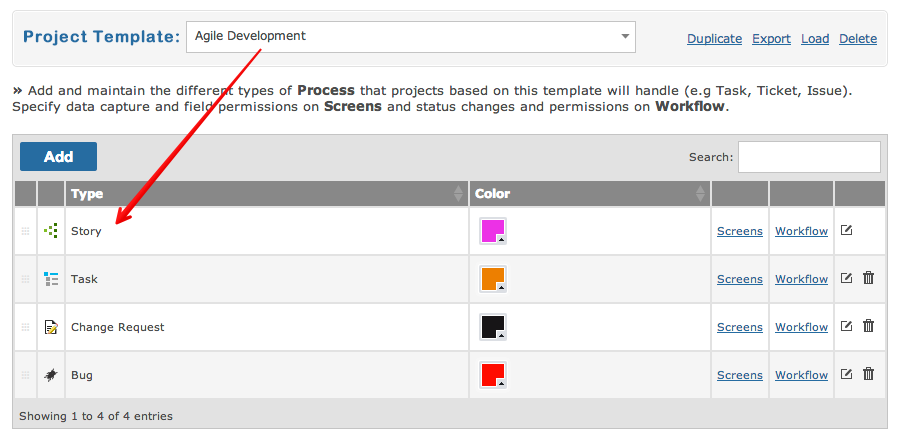
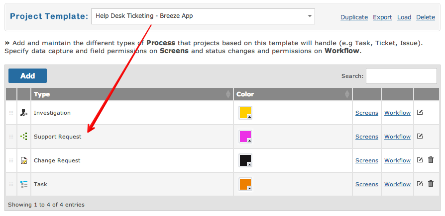
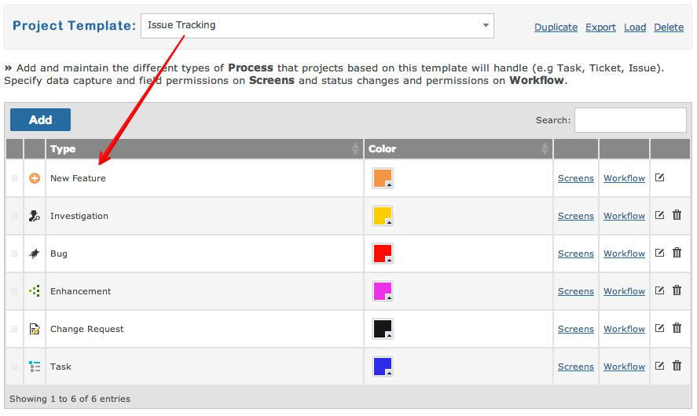

Every project is based on a template. A template defines the process, workflow and features available in the project.
The "agile" project template contains the following processes:

Now compare the above template to the "help desk" project template:

And now compare these to the "issue tracking" project template:
